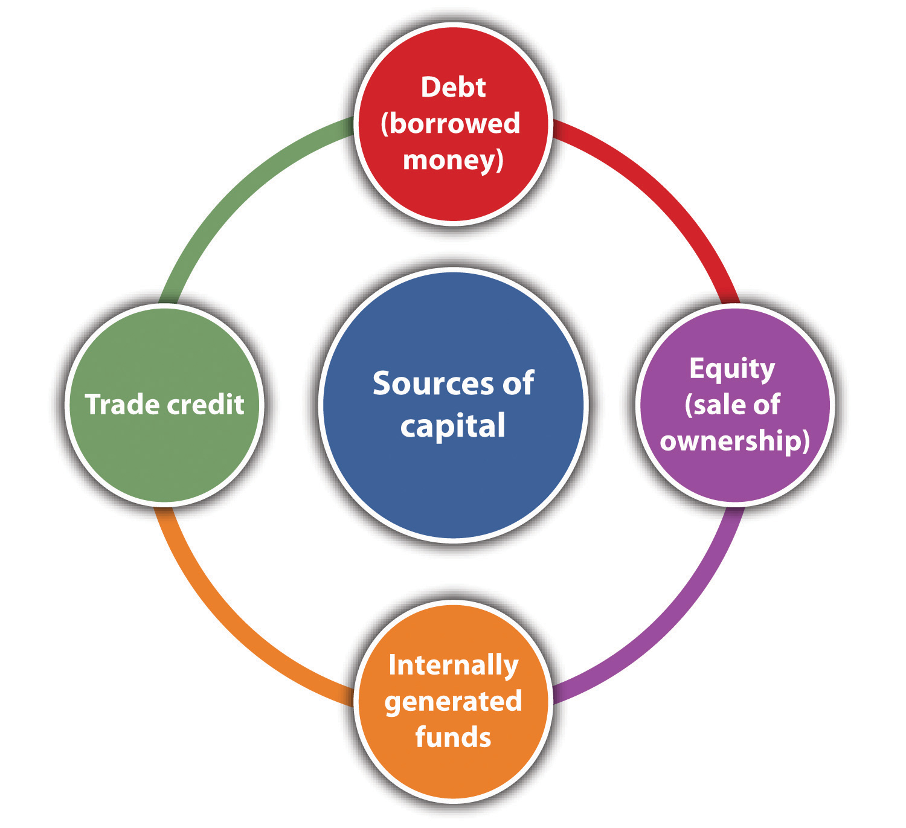

Source: Used with permission from Frank Salvatore.
No small business, or for that matter no large business, becomes a landmark and community-gathering place overnight. It takes time along with some very sharp management skills. In the case of the Notch Store, a local legend in Cheshire, Connecticut, it took ninety years and three generations of family members.
The business began in 1921 when Pauline Salvatore recognized a business opportunity. Her husband Mike worked in the nearby quarry, and she recognized that the employees needed a location where they could buy groceries for their lunch or to bring home for dinner. She began to sell them from her living room. Soon the business located to a facility next to her home. The name Notch Store came from its use in the quarry.
A few years later, Mike left the quarry and began to work with Pauline. Over the years, the Notch Store evolved as customer needs changed. They began to expand their offerings. The physical store was enlarged. A gasoline pump was installed, and for several years, one wall of the store carried auto parts.
In 1967, Mike and Pauline’s son Frank and his wife Josephine took over the operation of the business. In the 1970s, the Notch Store extended its offerings to include deli items and lunches. It even offered a homemade cider every fall. The business grew and included its third generation of Salvatores—Frank Jr.
In the early 1990s, Frank Jr. was in charge of operations. Like any business man, he was open to suggestions from others, including his employees. One woman who worked for Frank Jr. suggested that he add breakfast sandwiches to the menu. To make these sandwiches, Frank Jr. needed a restaurant-quality stove. In one of those strange twists of life, Frank Jr. had a friend who knew Joe Namath and his wife. The Namaths were building a new home, and Joe’s wife did not like the stove in the home. Frank Jr. acquired it, and since then, the breakfast sandwich offerings have become a major staple in the Notch Store.
No business develops without encountering problems, and the Notch Store was no exception. Several years ago, a number of customers complained that they had become ill from the Notch’s cider. This was followed by several lawsuits. For most businesses, this might have been a fatal crisis and financial ruin. Fortunately, years before, Frank Jr. had listened to his brother Robert’s advice (Robert was in the insurance industry). The Notch Store had $2.3 million in insurance coverage, which was more than enough to ensure its survival. For several reasons, including recognition of the risk of serving food to the public, the Notch Store has adopted a limited liability corporation format. Even with the best of financial planning and risk reduction strategies, many businesses have to deal with factors beyond their control. The recent economic downturn has meant that there is a significant reduction in new homes being built in Cheshire. This means that there are far fewer builders buying breakfasts and lunches, but Frank Jr. is coping with a small line of credit at a local bank. The future is still bright for the Notch Store and so is the possibility of it continuing into a fourth generation.Frank Salvatore (owner), in discussion with the authors.
Chapter 9 "Accounting and Cash Flow" discusses the critical importance of a small business owner understanding the fundamentals of accounting—“the language of business.” This chapter examines finance and argues that the small business owner should acquire a basic understanding of some key principles in this discipline. One question that might come to someone’s mind immediately is as follows: “What is the difference between accounting and finance?” As an academic discipline, finance began in the early decades of the twentieth century. We have already seen that accounting predates the formal study of finance by millennia.“Difference between Accounting and Finance,” DifferenceBetween.net, accessed February 1, 2012, www.differencebetween.net/business/difference-between -accounting-and-finance. Yet some have argued that accounting should be seen as a subset of finance.“Difference between Accounting and Finance,” DifferenceBetween.net, accessed February 1, 2012, www.differencebetween.net/business/difference-between -accounting-and-finance. Others have argued that both accounting and finance should be seen as subdisciplines of economics. Not surprisingly, others have argued in favor of the primacy of accounting. If we get beyond this debate, we can see that accounting is involved with the precise reporting of the financial position of a firm through the financial statements, which is presented in Chapter 9 "Accounting and Cash Flow". The accounting function is expected to collect, organize, and present financial information in a systematic fashion. FinanceThe science of money management that consists of financial planning, financial control, and financial decision making. can be seen as “the science of money management” and consists of three major activities: financial planning, financial control, and financial decision making. Financial planning deals with the acquisition of adequate funds to maintain the operations of a business and making sure that funds are available when needed. Control seeks to assure that assets are being efficiently used. Decision making is associated with determining how to acquire funds, where to acquire funds, and how those funds should be used and within the context of the risk assessment of the aforementioned decisions. As an academic discipline, finance has grown tremendously over the last four decades.
Much of the work produced during this period possessed both an esoteric analytical quality and profound practical consequences. One only has to look at newspapers and the business press, during the last few years, to see how financial theory (efficient market hypothesis) and financial models (options pricing, derivatives, and arbitrage models) have played a dominant role in the global economy. Fortunately, most small businesses have no need to directly involve themselves with these analytical abstractions. But this does not mean that small business owners do not need to concern themselves with fundamental issues of financing their firms.
Selecting the form of business organization that is adopted by a business depends on many factors. One could begin by anticipating the eventual size and nature of the business.“Types of Business Organizations,” BusinessFinance.com, accessed December 2, 2011, www.businessfinance.com/books/startabusiness/startabusinessworkbook010.htm. The complexity of a business may dictate the type of business organization that is adopted. However, many of the factors that go into this determination are either directly or indirectly financial in nature. The indirect factors are as follows: the extent to which a business owner wishes to attain control of the business, the relationship that the owner would have with partners or investors, and the perceived risk associated with the business. This last factor is tied to the question of the extent to which the owner will invest his or her own money and assets. The direct financial factors that go into selecting the type of the business organization include the following: expected profits or losses, tax issues, the vulnerability and threat from lawsuits, and the ability to extract profits from the business for the owner’s use. The federal government recognizes six forms of business organizations for tax purposes: sole proprietorshipThe most basic type of business organization in which there is only one owner., partnership, C-corporationA legal entity that must be chartered by the state in which it is headquartered, giving it the capability to enter into legal agreements with individuals and other corporations., S-corporationA special format designed to eliminate the problem of double taxation that one might find with a C-corporation format., trust, and nonprofit. The last two are unlikely to be adopted by small businesses. It is useful to examine the financial implications of organizing along the remaining four basic formats.
Many small businesses operated by a single individual adopt sole proprietorship format of business organization. It is the most basic type of business organization. It is also the least expensive to create and the easiest to operate and dissolve. Sole proprietorships can be incorporated if the owner so desires. Not being a legal entity, single scratch sole proprietorships disappear after the death of the owner. This type of business is essentially a format for a single-person business (although many have between one and ten employees), where the owner makes all the decisions related to the business’s operations. The owner can extract all profits from the business for his or her personal use, or the owner can decide to reinvest any portion of the profits back into the business. It is interesting to know that 70 percent of all businesses in the United States are sole proprietorships yet they only produce 20 percent of all the nation’s profits.“Business Finance—by Category,” About.com, accessed December 2, 2011, bizfinance.about.com/od/income tax/a/busorgs.htm. Because a single proprietorship is not a legal entity, any income generated by the business goes directly on the owner’s personal tax return. However, the single owner is also personally responsible for any debts that the business acquires. This means that the owner may put his or her own personal assets at risk. In addition, this business organization means unlimited liability for its owner. The format means that there is very little opportunity to raise funds from sources other than the owner’s own capital or consumer loans.
Partnerships generally are unincorporated businesses. From a financial standpoint, partnerships offer a few advantages over sole proprietorship. By having more than one owner (investor), it is often easier to raise additional capital. In some businesses, such as law firms and accounting firms, the prospect of becoming a partner may be an attractive inducement to gain employees. There are several versions of partnerships.
The general partnershipA business composed of two or more owners who contribute the initial capital of the business and share in the profits and the losses. is composed of two or more owners who contribute the initial capital of the business and share in the profits and any losses. It is similar to a sole proprietorship in that all partners are personally responsible for all the debts and the liabilities of the business. A general partnership is comparable to a sole proprietorship in that neither is a taxable entity; therefore, the partners’ profits are taxed as personal income. They can deduct any business losses from their personal income taxes. The exact proportion of ownership of the firm is generally found in a written document known as the partnership agreement.
A limited partnershipA business format that may have several general partners and several more limited partners who do not have unlimited liability. is a business that may have several general partners and several more limited partners. The major difference with a general partnership is that the limited partners do not have unlimited liability. Their losses are limited to their original investment in the business. Common practice means that these limited partners do not play a major decision-making role in the life of the business.
Selecting a C-corporation form of business entails more effort and expense in creating this format. Corporations must be chartered by the state in which they are headquartered. Corporations are viewed as legal entities, meaning that they can enter into legal agreements with individuals and other corporations. They are also subject to numerous local and state regulations. This often results in extensive paperwork that can be costly. Corporations are owned by their shareholders. The shareholders are liable only for their original investment in the business. They cannot be sued for more than that amount. One of the major advantages of adopting a corporate format is that in this type of business, it is sometimes much easier to raise capital through either debt or the issuance of stock. Profits derived from this type of business are taxed at the corporate rate. It is important to note that dividends paid to shareholders, unlike interest expenses, are not deductible. So in a real sense, this form of income is doubly taxed.
The S-corporation is a special format designed to eliminate the problem of double taxation that one might find with a C-corporation format. It first differs from a C-corporation in that it is limited to a hundred shareholders, although it can be created with just one shareholder. If a shareholder is an employee of the business and contributes any service to the business, then the corporation is required to pay that individual a salary. The term that is used is “reasonable” salary. This definition may vary under several conditions. A failure to comply with this ambiguous definition of “reasonable” salary means that the IRS can reclassify the profits as wages and tax the amount at the personal income rate.
A limited liability companyAn organizational form that can be limited to a single individual or several other owners or shareholders. is an organizational form that can be limited to a single individual or several other owners or shareholders. Like a general partnership, there is a requirement for documents that define the distribution of responsibilities, profits, or losses. Generally, the members of a limited liability company are liable for the debts of the company. This format may provide tax and financial benefits for the participants. This format cannot be used in the banking or insurance industries.
Capital is the lifeblood of all businesses. It is needed to start, operate, and expand a business. Capital comes from several sources: equity, debt, internally generated funds, and trade credits (see Figure 10.1 "Sources of Capital").
Figure 10.1 Sources of Capital
Equity financing raises money by selling a certain share of the ownership of the business. It involves no explicit obligation or expectation, on the part of the investors, to be repaid their investment. The value of equity financing lies in the partial ownership of the business.
Perhaps the major source of equity financing for most small start-up businesses comes from personal savings. The term bootstrapping refers to using personal, family, or friends’ money to start a business.“Financing,” Small Business Notes, accessed December 2, 2011, www.smallbusinessnotes.com/business-finances/financing. The use of one’s own money (or that of family and friends) is a strong indicator that a business owner has a strong commitment to and belief in the success of the business. If a business is financed totally from one’s personal savings, that means the owner or the operator has total control of the business.
If a business is structured as a corporation, it may issue stock. Generally, two major types of stock may be issued: common stock and preferred stock. It should be noted that in most cases, owners of common stock have what are known as voting rights. They have a proportional vote (directly related to the number of shares they own) for members of the board of directors. Preferred stock does not carry with it voting rights, but it has a form of guaranteed dividend.
Corporations that issue stock must comply with several steps to meet both federal and state statutes, including the following: outlines to issue stock to shareholders, determining the price and number of shares to be issued, creating stock certificates; developing a record to record all stock transactions; and meeting all federal and state securities requirements.“Checklist: Issuing Stock,” San Francisco Chronicle, accessed December 2, 2011, allbusiness.sfgate.com/10809-1.html. Smaller businesses may choose to issue stock only to those who were involved in the initial investment of the business. In such cases, one generally does not have to register these securities with state or federal agencies. However, one may be required to fill out all the forms.“How to Form a Corporation,” Yahoo! Small Business Advisor, April 26, 2011, accessed February 1, 2012, smallbusiness.yahoo.com/advisor/how-to-form-a-corporation -201616320.html.
Chapter 5 "The Business Plan" discusses two sources of capital investment: venture capitalist and angel investors. Venture capitalists are looking for substantial returns on their initial investment—five, ten, sometimes even twenty-five times their original investment. They will be looking for firms that can rapidly generate significant profits or significant growth in sales. Angel investors may be more attracted to their interest in the small business concept than in reaping significant returns. This is not to say that they are not interested in recouping their original investment with some type of significant return. It is much more likely that angel investors, as compared to venture capitalists, will play a much more active role in the decision-making process of the small business.
One area for possible capital infusion into a small business may come from a surprising source. Many students (and some adults) may find funding to start up a business through business plan competitions. These competitions are often hosted by colleges and universities or small business associations. The capital investment may not be large, but it might be enough to start very small businesses.
Debt financing represents a legal obligation to repay the original debt plus interest. Most debt financing involves a fixed payment schedule to repay both principal and interest. A failure to meet the schedule has serious consequences, which might include the bankruptcy of the business. Those who provide debt financing expect that the principal will be repaid with interest, but they are not formal investors in the business.
There are numerous sources for debt financing. Some small businesses begin with financing by borrowing from friends and family. Some firms may choose to finance business operations by using either personal or corporate credit cards. This approach to financing can be extraordinarily expensive given the interest rates charged on credit cards and the possibility that the credit card companies may change (by a significant amount) the credit limit associated with the credit card.
The largest source of debt financing for small businesses in the United States comes from commercial banks.“How Will a Credit Crunch Affect Small Business Finance?,” Federal Reserve Bank of San Francisco, March 6, 2009, accessed December 2, 2011, www.frbsf.org/publications/economics/letter/2009/el2009-09.html. Bank lending can take many forms. The most common loan specifies the amount of money to be repaid within a specific time frame for a specific interest rate. These loans can be either secured or unsecured. Secured loans involve pledging some assets—such as a home, real estate, machinery, and plant—as collateral. Unsecured loans provide no such collateral. Because they are riskier for the bank, they generally have higher interest rates. For a more comprehensive discussion of bank loans, see Section 10.2.1 "Relationships with Bank and Bankers".
The Small Business Administration (SBA) has a large number of programs designed to help small businesses. These include the business loan programs, investment programs, and bonding programs. The SBA operates three different loan programs. It should be understood that the SBA does not make the loan itself to a small business but rather guarantees a portion of the loan to its partners that include private lenders, microlending institutions, and community development organizations. To secure one of these loans, the borrower must meet criteria set forth by the SBA. It should be recognized that these SBA loan rules and guidelines can be altered by the US Congress and are dependent on prevailing economic and political conditions. The following subsections briefly describe some of the loan programs used by the SBA.
This class of loans may be used for a variety of reasons, including the purchase of land, buildings, equipment, machinery, supplies, or materials. It may also be used for long-term working capital (paying accounts payable or the purchase of inventory). It may even be used to purchase an existing business. This class of loans cannot, however, be used to refinance existing debt, to pay delinquent taxes, or to change business ownership.
Export loan programs. Given the remarkable fact that 70 percent of American exporters have less than twenty employees, it is not surprising that the SBA makes a special effort to support these businesses by providing specialized loan programs. These programs include the following:
Another source of debt financing is the issuance of bonds. Bonds are promissory notes. There are many forms of bonds, and here we discuss only the most basic type. The fundamental format of the bond is that it is a debt instrument that promises to repay a fixed amount of money within a given time frame while providing interest payments on a regular basis. The issuance of bonds is generally an option available to businesses with a corporation format. It also requires extensive legal and financial preparations.
Another source of capital is the generation of internal funding. This simply means that a business plows its retained earnings back into the business. This is a viable source of capital when a business is highly profitable.
The last source of capital is trade credit. Trade credit involves purchasing supplies or equipment through financing made available by vendors. This approach may allow someone to acquire inventory of materials and supplies without having the full price at the time of purchase. Some analysts say that trade credit is the second largest source of financing for small businesses after borrowing from banks.Anita Campbell, “Trade Credit: What It Is and Why You Should Pay Attention,” Small Business Trends, May 11, 2009, accessed December 2, 2011, smallbiztrends.com/2009/05/trade-credit-what-it-is-and-why-you-should-pay-attention.html. Trade credit is often a vital way of securing supplies.
Trade credit is often expressed in terms of three important numbers—a discount rate, the number of days for one to pay to qualify for the discount, and the number of days on which the bill must be paid. As an example, a trade credit offered by a supplier might be listed as 5/5/30. This translates into a 5 percent discount if the bill is paid within five days of the issuance. The third number means that the bill must be paid in full within thirty days.
How to Raise Capital: The #1 Skill of an Entrepreneur
(click to see video)Describes what an entrepreneur needs to do in order to acquire capital for the firm.
Pat Gage: Getting Business Financing for a Small Business
(click to see video)Voice-over PowerPoint identifies where a small business owner can acquire funding.
How to Finance a Business: How to Get Start-Up Business Financing
(click to see video)Examines the use of bank financing for the small business.
Financing a New Business: How to Find Government Small Business Grants
(click to see video)Locate places to find small business grants through search engines with ideas from a certified public accountant in this free video on new business financing.
The Role of Credit Cards in Small Business Financing
(click to see video)Congressional testimony that warns of the use of using credit cards to finance small businesses.
Financial Analysis for Small-Business Owners
(click to see video)This excerpt from the popular video learning series at BusinessBuffet.com introduces the core concepts behind financial analysis for small business.
Financing Small Business Portal
Discusses financing opportunities.
Credit Loans for Small Businesses
The Chase portal—one provider of loans for small businesses.
www.chase.com/index.jsp?pg_name=ccpmapp/smallbusiness/credit_loans/page/bb_lending
Five Ways to Finance a Business in Difficult Financial Times
Alternative ways of financing when banks are not lending.
biztaxlaw.about.com/od/financingyourstartup/tp/financingsmallbiz.htm
A critical component of financial planning for any business is determining the extent to which a firm will be financed by debt and by equity. This decision determines the financial leverageThe proportion of a firm that is financed by debt and by equity. of a business. Many factors enter into this decision, particularly for the small business. From the classic economic and finance perspective, one should evaluate the cost of both debt and equity. Debt’s cost centers largely on the interest rate associated with a specific debt. Equity’s cost includes ceding control to other equity partners, the cost of issuing stock, and dividend payments. One should also consider the fact that the interest payment on debt is deductible and therefore will lower a business’s tax bill.Gavin Cassar, “The Financing of Business Startups,” Journal of Business Venturing 19 (2004): 261–83. Neither the cost of issuing stock nor dividend payments is tax deductible.
Larger businesses have many more options available to them than smaller enterprises. Although this is not always true, larger businesses can often arrange for larger loans at more favorable rates than smaller businesses.Lola Fabowale, Barbara Orse, and Alan Riding, “Gender, Structural Factors, and Credit Terms between Canadian Small Businesses and Financial Institutions,” Entrepreneurship Theory and Practice 19 (1995): 41–65. Larger businesses often find it easier to raise capital through the issuance of stock (equity).
By increasing a business’s proportion of debt, its financial leverage can be increased. There are many reasons for attempting to increase a business’s financial leverage. First, one is growing the business with someone else’s money. Second, there is the deductible nature of interest on debt. Third, as more clearly shown in Section 10.3.2 "Capital Structure Issues in Practice", increasing one’s financial leverage can have a positive impact on the business’s return on equity. For all these benefits, however, there is the inescapable fact that increasing a business’s debt level also increases a business’s overall risk. The term financial leverage can be seen as being comparable to the base word—lever. Levers are tools that can amplify an individual’s power. A certain level of debt can amplify the “lifting” power of a business (see the upper portion of Figure 10.2 "Acceptable and Unacceptable Levels of Leverage"). However, beyond a certain point, the debt may be out of reach, and therefore the entire lifting power of financial leverage may be lost (see the lower portion of Figure 10.2 "Acceptable and Unacceptable Levels of Leverage"). Beyond the loss of lifting power, the assumption of too much debt may lead to an inability to pay the interest on the debt. This situation becomes the classic case of filing for Chapter 1 "Foundations for Small Business"1 bankruptcy.
Figure 10.2 Acceptable and Unacceptable Levels of Leverage

This major issue for small businesses—determining how to raise funds through either debt or equity—often transcends economic or financial decisions. For many small business owners, the ideal way of financing business growth is through generating internal funds. This means that a business does not have to acquire debt but has generated sufficient profits from its operations. Unfortunately, many small businesses, particularly at the beginning, cannot generate sufficient internal funds to finance areas such as product development, the acquisition of new machinery, or market expansions. These businesses have to rely on securing additional capital debt, equity, or some combination of both.
Many individuals start small businesses with the express purpose of finding independence and control over their own economic and business lives. This desire for independence may make many small business owners averse to the idea of equity financing because that might mean ceding business control to equity partners.Harry Sapienza, M. Audrey Korsgaard, and Daniel Forbes, “The Self-Determination Mode of an Entrepreneur’s Choice of Financing,” in Advances in Entrepreneurship, Firm Emergence, and Growth: Cognitive Approaches to Entrepreneurship Research, ed. Jerome A. Katz and Dean Shepherd (Oxford: Elsevier JAI, 2003) 6:105–38. Another issue that makes some small business owners averse to acquiring additional equity partners is the simple fact that the acquisition of these partners means less profit to the business owner. This factor in the control issue must be considered when the small business owner is looking to raise additional capital through venture capitalist and angel investors.Allen N. Berger and Gregory F. Udell, “The Economics of Small Business Finance: The Roles of Private Equity and Debt Markets in the Financial Growth Cycle,” Journal of Banking and Finance 22, no. 6–8 (1998): 613–73.
A recent research paperRowena Ortiz-Walters and Mark Gius, “Performance of Newly Formed Micro Firms: The Role of Capital Financing Structure and Entrepreneurs’ Personal Characteristics” (unpublished manuscript), 2011. examined the relationship between profitability and sources of financing for firms that had fewer than twenty-five employees. It found several rather interesting results:
Capital Structure
Definition and explanation of capital structure.
www.enotes.com/capital-structure-reference/capital-structure-178334
Capital Structure from an Investor’s Perspective
This reviews how an investor would interpret a business’s capital structure.
beginnersinvest.about.com/od/financialratio/a/capital-structure.htm
One often hears the following standard complaint of small businesses: bankers lend money only to those businesses that do not need the money. The inverse of this complaint from the bank’s standpoint might be that small businesses request money only when they are least likely to be able to repay it. The conflict between small businesses and bankers may stem from a misunderstanding of the respective roles of both groups. At face value, it might appear—particularly to small businesses—that bankers are investing in their companies.
Under normal conditions, bankers are extremely risk averse. This means they are not investors anticipating a substantial return predicated on the risks associated with a particular business. Bankers lend money with the clear expectation that they will be repaid both principal and interest. It is in the interest of both parties to transcend these two conflicting perceptions of the role of bankers in the life of a small business. The key way is for the small business owner to try to foster improved communications with a banker. This communication promoted by the small business owner should become the basis of a solid working relationship with the bank. Most often, this means developing a personal relationship with the loan officer of the bank, which is sometimes a problematic proposition. Bank loan officers are often moved to different branches, or they may change jobs and work for different banks. It should be the responsibility of the small business owner to maintain frequent contact with whoever is representing the bank. This should involve more than just providing quarterly statements. It should include face-to-face discussions and even asking the officer to tour a business’s facilities. The point is to personalize the working relationship between the two parties. “Ideally, it’s a human relationship as well as a business relationship,” says Bill Byne, an entrepreneur and author of Habits of Wealth.“The Benefits of Making Your Banker Your Friend,” Small Business Administration, accessed December 2, 2011, www.sbaonline.sba.gov./smallbusinessplanner/start/financestartup/SERV_BANKERFRIEND.html.
Although bankers and loan officers will rely heavily on data related to the creditworthiness of a small business, they will also consider the trustworthiness and integrity of the business owner. This intangible sense that a business owner is a worthy credit risk may play a determinant role in whether a loan is approved with the extension of a credit line. This notion of integrity has to be built over time. It is predicated on projecting an image that you can be counted on to honor what you say, know the right thing to do to make the business a success, and be able to execute the correct decisions.
It is sometimes said that bankers, when reviewing a perspective loan applicant, think of the drink “CAMPARIAn acronym used by bankers to describe factors that they consider when evaluating a loan: character, ability, means, purpose, amount, repayment, and insurance.,” which stands for the following:
One should recognize that a good relationship with the bank can yield benefits above and beyond credit lines and business loans. Bankers can serve as interlocutors, connecting you to potential customers, suppliers, and other investors. A good working relationship with a bank can be the best reference a business could have. This is particularly true in the current business climate where bankers have significantly restricted lending to small businesses.
Arrange an interview with a loan officer at a local bank. Ask him or her what factors are considered when evaluating a small business loan for
A breakeven analysisUsed to determine the amount of sales volume a company needs to start making a profit: when its total sales or revenues equal its total expenses. is remarkably useful to someone considering starting up a business. It examines a business’s potential costs—both fixed and variable—and then determines the sales volume necessary to produce a profit for given selling price.“Breakeven Analysis: Know When You Can Expect a Profit,” Small Business Administration, accessed December 2, 2011, www.sba.gov/content/breakeven-analysis -know-when-you-can-expect-profit. This information enables one to determine if the entire concept is feasible. After all, if one has to sell five million shoes in a small town to turn a profit, one would immediately recognize that there may be a severe problem with the proposed business model.
A breakeven analysis begins with several simplifying assumptions. In its most basic form, it assumes that you are selling only one product at a particular price, and the production cost per unit is constant over a wide range of values. The purpose of a breakeven analysis is to determine the sales volume that is required so that you neither lose money nor make a profit. This translates into a situation in which the profit level is zero. Put in equation form, this simply means
total revenue − total costs = $0.By moving terms, we can see that the break-even point occurs when total revenues equal total costs:
total revenue = total costs.We can define total revenue as the selling price of the product times the number of units sold, which can be represented as follows:
total revenue (TR) = selling price (SP) × sales volume (Q) TR = SP × Q.Total costs are seen as being composed of two parts: fixed costs and total variable costs. Fixed costs exist whether or not a firm produces any product or has any sales and consist of rent, insurance, property taxes, administrative salaries, and depreciation. Total variable costs are those costs that change across the volume of production. As part of the simplifying assumptions of the breakeven analysis, it is assumed that there is a constant unit cost of production. This would be based on the labor input and the amount of materials required to make one unit of product. As production increases, the total variable cost will likewise increase, which can be represented as follows:
total variable costs (TVC) = variable cost per unit (VC) × sales quantity (Q) TVC = VC × Q.Total costs are simply the summation of fixed costs plus the total variable costs:
total costs (TC) = [fixed costs (FC) + total variable cost (TVC)] TC = FC + TVC.The original equation for the break-even point can now be rewritten as follows:
[selling price (SP) × sales volume (Q)] − total costs (TC) = $0 (SP × Q) − TC = $0.At the break-even point, revenues equal total costs, so this equation can be rewritten as
SP × Q = TC.Given that the total costs equal the fixed costs plus the total variable costs, this equation can now be extended as follows:
selling price (SP) × sales volume (Q) = [fixed costs (FC) + total variable costs (TVC)] SP × Q = FC + TVC.This equation can be expanded by incorporating the definition of total variable costs as a function of sales volume:
SP × Q = FC + (VC × Q).This equation can now be rewritten to solve for the sales value:
(SP × Q) − (VC × Q) = FC.Because the term sales volume is present in both terms on the left-hand side of the equation, it can be factored to produce
Q × (SP − VC) = FC.The sales value to produce the break-even point can now be solved for in the following equation:
Q = FC / (SP − VC).The utility of the concept of break-even point can be illustrated with the following example.
Carl Jacobs, a retired engineer, was a lifelong enthusiast of making plastic aircraft models. Over thirty years, he entered many regional and national competitions and received many awards for the quality of his model building. Part of this success was due to his ability to cast precision resin parts to enhance the look of his aircraft models. During the last ten years, he acquired a reputation as being an expert in this field of creating these resin parts. A friend of his, who started several businesses, suggested that Carl look at turning this hobby into a small business opportunity in his retirement. This opportunity stemmed from the fact that Carl had created a mold into which he could cast the resin part for a particular aircraft model; this same mold could be used to produce several hundred or several thousand copies of the part, all at relatively low cost.
Carl had experience only with sculpturing and casting parts in extremely low volumes—one to five parts at a time. If he were to create a business format for this hobby, he would have to have a significant investment in equipment. There would be a need to create multiple metal molds of the same part so that they could be cast in volume. In addition, there would be a need for equipment for mixing and melting the chemicals that are required to produce the resin. After researching, he could buy top-of-the-line equipment for a total of $33,000. He also found secondhand but somewhat less efficient equipment. Carl estimated that the total cost of acquiring all the necessary secondhand equipment would be close to $15,000. After reviewing the equipment specifications, he concluded that with new equipment, the unit cost of producing a set of resin parts for a model would run $9.25, whereas the unit cost for using the secondhand equipment would be $11.00. After doing some market research, Carl determined that the maximum price he could set for his resin sets would be $23.00. This would be true whether the resin sets were produced with new or secondhand equipment.
Carl wanted to determine how many resin sets would have to be sold to break even with each set of equipment. For simplicity’s sake, he assumed that the initial purchase price of both options would be his fixed cost. His analysis is presented in Table 10.1 "break-even point Analysis".
Table 10.1 break-even point Analysis
| Option | Fixed Costs | Variable Cost | Selling Price | break-even point |
|---|---|---|---|---|
| New equipment | $33,000 | $9.25/unit | $23.00 |
Q = $33,000 / ($23.00 − $9.25) Q = $33,000 / $13.75 Q = 2,400 units |
| Secondhand equipment | $15.000 | $11.00/unit | $23.00 |
Q = $15,000 / ($23.00 − $11.00) Q = $15,000 / $12.00 Q = 1,250 units |
From this analysis, he could see that although the secondhand equipment is not as efficient (hence the higher variable cost per unit), it will break even at a significantly lower level of sales than the new equipment. Carl was still curious about the profitability of the two sets of equipment at different levels of sales. So he ran the numbers to calculate the profitability for both sets of equipment at sales levels of 1,000 units, 3,000 units, 5,000 units, 7,500 units, and 10,000 units. The results are presented in Table 10.2 "Sales Level versus Profit Breakdown".
Table 10.2 Sales Level versus Profit Breakdown
| Secondhand Equipment | New Equipment | |||||||
|---|---|---|---|---|---|---|---|---|
| Sales Level | Revenue | Fixed Cost | Total Variable Costs | Profit | Revenue | Fixed Cost | Total Variable Costs | Profit |
| 1,000 | $23,000 | $15,000 | $11,000 | $(3,000) | $23,000 | $33,000 | $9,250 | $(19,250) |
| 3,000 | $69,000 | $15,000 | $33,000 | $21,000 | $69,000 | $33,000 | $27,750 | $8,250 |
| 5,000 | $115,000 | $15,000 | $55,000 | $45,000 | $115,000 | $33,000 | $46,250 | $35,750 |
| 7,500 | $172,500 | $15,000 | $82,500 | $75,000 | $172,500 | $33,000 | $69,375 | $70,125 |
| 10,000 | $230,000 | $15,000 | $110,000 | $105,000 | $230,000 | $33,000 | $92,500 | $104,500 |
From these results, it is clear that the secondhand equipment is preferable to the new equipment. At 10,000 units, the highest annual sales that Carl anticipated, the overall profits would be greater with secondhand equipment.
Breakeven Analysis: Economics for Managers
(click to see video)A slide show showing breakeven calculations.
Perform a Breakeven Analysis with Excel’s Goal Seek Tool
(click to see video)Shows how Excel can be used to conduct sophisticated breakeven analyses.
This site provides a straightforward description of breakeven analysis with an example.
In Section 10.2 "Financial Control", the need to balance debt and equity, with respect to financing a firm’s operations, is briefly discussed. A critical financial decision for any business owner is determining the extent of financial leverage a firm should acquire. Building a firm using debt amplifies a return of equity to the owners; however, the acquisition of too much debt, which cannot be repaid, may lead to a Chapter 1 "Foundations for Small Business"1 bankruptcy, which represents a complete failure of the firm.
In the early 1950s, the field of finance tried to describe the effect of financial leverage on the valuation of a firm and its cost of capital.David Durand, “Cost of Debt and Equity Funds for Business: Trends and Problems of Measurement,” Conference on Research in Business Finance (New York: National Bureau of Economic Research, 1952), 220. A major breakthrough occurred with the works of Franco Modigliani and Merton Miller.Franco Modigliani and Merton Miller, “The Cost of Capital, Corporation Finance and the Theory of Investment,” American Economic Review 48, no. 3 (1958): 261–97; Franco Modigliani and Merton Miller, “Taxes and the Cost of Capital: A Correction,” American Economic Review 53 (1963): 433–43. Reduced to simplest form, their works hypothesized that the valuation of a firm increases as the financial leverage increases. This is true but only up to a point. When a firm exceeds a particular value of financial leverage—namely, it has assumed too much debt—the overall value of the firm begins to decline. The point at which the valuation of a firm is maximized determines the optimal capital structure of the business. The model defined valuation as a firm’s earnings before interest and taxes (EBIT) divided by its cost of capital. Cost of capitalThe weighted average of a firm’s debt and equity, where equity is directly related to the firm’s stock. is a weighted average of a firm’s debt and equity, where equity directly relates to a firm’s stock. The reality is that this model is far more closely attuned, from a mathematical standpoint, to the corporate entity. It cannot be directly applied to most small businesses. However, the basic notion that there is some desired level of debt to equity, a level that yields maximum economic benefit, is germane, as we will now illustrate.
Let us envision a small family-based manufacturing firm that until now has been able to grow through the generation of internal funds and the equity that has been invested by the original owners. Presently, the firm has no long-term debt. It has a revolving line of credit, but in the last few years, it has not had to tap into this line of credit to any great extent. The income statement for the year 2010 and the projected income statement for 2011 are given in Table 10.3 "Income Statement for 2010 and Projections for 2011". In preparing the projected income statement for 2011, the firm assumed that sales would grow by 7.5 percent due to a rapidly rising market. In fact, the sales force indicated that sales could grow at a much higher rate if the firm can significantly increase its productive capacity. The projected income statement estimates the cost of goods sold to be 65 percent of the firm’s revenue. This estimate is predicated on the past five years’ worth of data. Table 10.4 "Abbreviated Balance Sheet" shows an abbreviated balance sheet for 2010 and a projection for 2011. The return on assets (ROA) and the return on equity (ROE) for 2010 and the projected values for 2011 are provided in Table 10.5 "ROA and ROE Values for 2010 and Projections for 2011".
Table 10.3 Income Statement for 2010 and Projections for 2011
| 2010 | 2011 | |
|---|---|---|
| Revenue | $475,000 | $510,625 |
| Cost of goods sold | $308,750 | $331,906 |
| Gross profit | $166,250 | $178,719 |
| General sales and administrative | $95,000 | $102,125 |
| EBIT | $71,250 | $76,594 |
| Interest | $— | $— |
| Taxes | $21,375 | $22,978 |
| Net profit | $49,875 | $53,616 |
Table 10.4 Abbreviated Balance Sheet
| 2010 | 2011 | |
|---|---|---|
| Total assets | $750,000 | $765,000 |
| Long-term debt | $— | $— |
| Owners’ equity | $750,000 | $765,000 |
| Total debt and equity | $750,000 | $765,000 |
Table 10.5 ROA and ROE Values for 2010 and Projections for 2011
| 2010 (%) | 2011 (%) | |
|---|---|---|
| Return on assets | 6.65 | 7.01 |
| Return on equity | 6.65 | 7.01 |
After preparing these projections, the owners were approached by a company that manufactures computer-controlled machinery. The owners were presented with a series of machines that will not significantly raise the productive capacity of their business while also reducing the unit cost of production. The owners examined in detail the productive increase in improved efficiency that this computer-controlled machinery would provide. They estimated that demand in the market would increase if they had this new equipment, and sales could increase by 25 percent in 2011, rather than 7.5 percent as they had originally estimated. Further, the efficiencies brought about by the computer-controlled equipment would significantly reduce their operating costs. A rough estimate indicated that with this new equipment the cost of goods sold would decrease from 65 percent of revenue to 55 percent of revenue. These were remarkably attractive figures. The only reservation that the owners had was the cost of this new equipment. The sales price was $200,000, but the business did not have this amount of cash available. To raise this amount of money, they would either have to bring in a new equity partner who would supply the entire amount, borrow the $200,000 as a long-term loan, or have some combination of equity partnership and debt. They first approached a distant relative who has successfully invested in several businesses. This individual was willing to invest $50,000, $100,000, $150,000, or the entire $200,000 for taking an equity position in the firm. The owners also went to the bank where they had line of credit and asked about their lending options. The bank was impressed with the improved productivity and efficiency of the proposed new machinery. The bank was also willing to lend the business $50,000, $100,000, $150,000, or the entire $200,000 to purchase the computer-controlled equipment. The bank, however, stipulated that the lending rate would depend on the amount that was borrowed. If the firm borrowed $50,000, the interest rate would be 7.5 percent; if the amount borrowed was $100,000, the interest rate would increase to 10 percent; if $150,000 was the amount of the loan, the interest rate would be 12.5 percent; and if the firm borrowed the entire $200,000, the bank would charge an interest rate of 15 percent.
To correctly analyze this investment opportunity, the owners could employ several financial tools and methods, such as net present value (NPV)A financial model that examines future cash flows from an investment and discounts the value of those investments by a specified interest rate. It then subtracts this discounted cash flow from the original value of the investment to determine whether or not a business should make an investment.. This approach examines a lifetime stream of additional earnings and cost savings for an investment. The cash flow that might exist is then discounted by the cost of borrowing that money. If the NPV is positive, then the firm should undertake the investment; if it is negative, the firm should not undertake the investment. This approach is too complex—for the needs of this text—to be examined in any detail. For the purpose of illustration, it will be assumed that the owners began by looking at the impact of alternative investment schemes on the projected results for 2011. Obviously, any in-depth analysis of this investment would have to entail multiyear projections.
They examined five scenarios:
Table 10.6 "Income Statement for the Five Scenarios" presents the income statement for these five scenarios. (An abbreviated balance sheet for the five scenarios is given in Table 10.7 "Abbreviated Balance Sheet for the Five Scenarios".) All five scenarios begin with the assumption that the new equipment would improve productive capacity and allow sales to increase, in 2011, by 25 percent, rather than the 7.5 percent that had been previously forecasted. Likewise, all five scenarios have the same cost of goods sold, which in this case is 55 percent of the revenues rather than the anticipated 65 percent if the new equipment is not purchased. All five scenarios have the same EBIT. The scenarios differ, however, in the interest payments. The first scenario assumes that all $200,000 would be provided by a relative who is taking an equity position in the firm. This is not a loan, so there are no interest payments. In the remaining four scenarios, the interest payments are a function of the amount borrowed and the corresponding interest rate. The payment of interest obviously impacts the earnings before taxes (EBT) and the amount of taxes that have to be paid. Although the tax bill for those scenarios where money has been borrowed is less than the scenario where the $200,000 is provided by equity, the net profit also declines as the amount borrowed increases.
Table 10.6 Income Statement for the Five Scenarios
| Borrow $0 | Borrow $50,000 | Borrow $100,000 | Borrow $150,000 | Borrow $200,000 | |
|---|---|---|---|---|---|
| Revenue | $593,750 | $593,750 | $593,750 | $593,750 | $593,750 |
| Cost of goods sold | $326,563 | $326,563 | $326,563 | $326,563 | $326,563 |
| Gross profit | $267,188 | $267,188 | $267,188 | $267,188 | $267,188 |
| General sales and administrative | $118,750 | $118,750 | $118,750 | $118,750 | $118,750 |
| EBIT | $148,438 | $148,438 | $148,438 | $148,438 | $148,438 |
| Interest | $— | $3,750 | $10,000 | $18,750 | $30,000 |
| Taxes | $44,531 | $43,406 | $41,531 | $38,906 | $35,531 |
| Net profit | $103,906 | $101,281 | $96,906 | $90,781 | $82,906 |
Table 10.7 Abbreviated Balance Sheet for the Five Scenarios
| Borrow $0 | Borrow $50,000 | Borrow $100,000 | Borrow $150,000 | Borrow $200,000 | |
|---|---|---|---|---|---|
| Total assets | $965,000 | $965,000 | $965,000 | $965,000 | $965,000 |
| Long-term debt | $— | $50,000 | $100,000 | $150,000 | $200,000 |
| Owners’ equity | $965,000 | $915,000 | $865,000 | $815,000 | $765,000 |
| Total debt and equity | $965,000 | $965,000 | $965,000 | $965,000 | $965,000 |
The owners then calculated the ROA and the ROE for the five scenarios (see Table 10.8 "ROA and ROE for the Five Scenarios"). When they examined these results, they noticed that the greatest ROA occurred when the new machinery was financed exclusively by equity capital. The ROA declined as they began to fund new machinery with debt: the greater the debt, the lower the ROA. However, they saw a different situation when they looked at the ROE for each scenario. The ROE was greater in each scenario where the machinery was financed either exclusively or to some extent by debt. In fact, the lowest ROE (the firm borrowed the entire $200,000) was 50 percent higher than if the firm did not acquire the new equipment. A further examination of the ROE results provides a very interesting insight. The ROE increases as the firm borrows up to $100,000 of debt. When the firm borrows more money ($150,000 or $200,000), the ROE declines (see Figure 10.3 "ROE for the Five Scenarios"). This is a highly simplified example of optimal capital structure. There is a level of debt beyond which the benefits measured by ROE begins to decline. Small businesses must be able to identify their “ideal” debt-to-equity ratio.
Table 10.8 ROA and ROE for the Five Scenarios
| Borrow $0 | Borrow $50,000 | Borrow $100,000 | Borrow $150,000 | Borrow $200,000 | |
|---|---|---|---|---|---|
| ROA | 10.77% | 10.50% | 10.04% | 9.41% | 8.59% |
| ROE | 10.77% | 11.07% | 11.20% | 11.14% | 10.84% |
Figure 10.3 ROE for the Five Scenarios

The owners decided to carry their analysis one step further; they wondered if the sales projections were too enthusiastic. They were concerned about the firm’s ability to repay any loan should there be a drop in sales. Therefore, they decided to examine a worst-case scenario. Such analyses are absolutely critical if one is to fully evaluate the risk of undertaking debt. They ran the numbers to see what the results would be if there was a 25 percent decrease in sales in 2011 rather than a 25 percent increase in sales compared to 2010. The results of this set of analyses are in Table 10.9 "Income Statement for the Five Scenarios Assuming a 25 Percent Decrease in Sales". Even with a heavy debt burden for the five scenarios, the firm is able to generate a profit, although it is a substantially lower profit compared to if sales increased by 25 percent. They examined the impact of this proposed declining sales on ROA and ROE. These results are found in Table 10.10 "ROA and ROE for the Five Scenarios under the Condition of Declining Sales".
Table 10.9 Income Statement for the Five Scenarios Assuming a 25 Percent Decrease in Sales
| Borrow $0 | Borrow $50,000 | Borrow $100,000 | Borrow $150,000 | Borrow $200,000 | |
|---|---|---|---|---|---|
| Revenue | $356,250 | $356,250 | $356,250 | $356,250 | $356,250 |
| Cost of goods sold | $195,938 | $195,938 | $195,938 | $195,938 | $195,938 |
| Gross profit | $160,313 | $160,313 | $160,313 | $160,313 | $160,313 |
| General sales and administrative | $71,250 | $71,250 | $71,250 | $71,250 | $71,250 |
| EBIT | $89,063 | $89,063 | $89,063 | $89,063 | $89,063 |
| Interest | $— | $3,750 | $10,000 | $18,750 | $30,000 |
| Taxes | $26,719 | $25,594 | $23,719 | $21,094 | $17,719 |
| Net profit | $62,344 | $59,719 | $55,344 | $49,219 | $41,344 |
Table 10.10 ROA and ROE for the Five Scenarios under the Condition of Declining Sales
| Borrow $0 | Borrow $50,000 | Borrow $100,000 | Borrow $150,000 | Borrow $200,000 | |
|---|---|---|---|---|---|
| ROA | 6.46% | 6.19% | 5.74% | 5.10% | 4.28% |
| ROE | 6.46% | 6.53% | 6.40% | 6.04% | 5.40% |
Debt Financing versus Equity Financing: Which Is Best for Us?
(click to see video)Overview of the benefits and dangers associated with debt financing and equity financing.
Capital Structure
(click to see video)Compares capital structure to a commercial aircraft.
Lecture in Capital Structure
(click to see video)Explains why capital structure matters.
The Capital Structure of a Company
(click to see video)Discusses the issue of long-term and short-term debt in capital structure.
In Chapter 2 "Your Business Idea: The Quest for Value", Chapter 6 "Marketing Basics", and Chapter 7 "Marketing Strategy", there has been extensive discussion of the notion of market segmentation. By segmenting the market, one improves the probability that a business will be able to better serve particular customers’ needs and thus provide better customer value. From a financial perspective, there may be an equivalent notion of segmentation. Earlier discussions on market segmentation were centered on how a business could provide value to particular sets of customers. A subsequent stage of this analysis would be to examine how and if these customers can provide value to a business. No one is served if the business provides significant value to its customers but the business goes broke in the process. The financial equivalent of customer segmentation examines the profitability of different groups of customers. Some customer groups may be extremely profitable to a firm, while others produce nothing but losses. Identifying these different groups requires a commitment to accounting and a financial analysis of each customer base. The first step is to determine the margin provided by each customer group. In many cases, this is a bit of a challenge. It may require more extensive record keeping. The business may have to use activity-based costing systemsAn accounting system where costs are assigned due to the cause-and-effect relationship between costs and the activity that drives the cost.. (Activity-based costing systems were developed in the late 1970s and the early 1980s.) This approach to accounting “is a process where costs are assigned due to the cause and effect relationship between costs and the activity that drives the cost.”Tiffany Bradford, “Activity-Based Costing,” Accounting @ Suite 101, accessed December 2, 2011, tiffany-bradford.suite101.com/activitybased-costing-abc-a52148.
Done properly, activity-based accounting can help a business identify the true costs for serving particular customer groups and therefore identify their real profit margins. A business may discover that some customer groups are actually a source of losses for the firm.
It should be pointed out that activity-based accounting is complex, difficult to implement, and, in some instances, does not conform to the requirements of generally accepted accounting principles. This might mean that a business would have to have two coexisting accounting systems, which may be too much of a burden for the small business.
It should not be too surprising to find that good financial management can benefit tremendously when a firm’s cash flow is improved. Two areas where good financial management can help would be e-procurement and factoring. E-procurementThe purchasing of supplies through the Internet and the timing of invoices to customers and from suppliers to improve the cash flow of a firm. involves managing the timing of invoices to customers and from suppliers to improve the cash flow of the firm.Peter Robbins, “E-Procurement—Making Cash Flow King,” Credit Control 26, no. 2 (2005): 23–26. The electronic handling of orders and their associated invoices assures that customers will receive their orders in a more timely fashion. E-procurement means that fewer personnel are required to take and handle orders. This can be a tremendous source of cash saving in and of itself. E-procurement should be on any supply chain management program of a business. We discuss supply chain management in Chapter 12 "People and Organization".
Another area where good financial management can improve cash flow is factoring. The most common form of factoring is associated with a business’s accounts receivable. Trade credits involve purchasing and taking delivery of supplies now while planning to pay for it later. (See Section 10.1 "The Importance of Financial Management in Small Business" for a discussion of trade credits.) Three key numbers often identify trade credits: a discount rate for early payment, the time to pay to take advantage of the discount rate, and the date by which the entire bill must be paid. We underscore the kinds of the factoring with the following example.
A firm makes a large sale of supplies—$200,000. The trade credit program is 2/10/60. This means that the firm will give a 2 percent discount if the customer pays the entire $200,000 within 10 days and expects the payment of the entire $200,000 within the next 60 days. The firm knows that its customer never exercises the discount opportunity and always pays on the last possible date. Further, let us assume that this firm is having a problem with its cash flow. It would like to expedite payment as quickly as possible but does not expect that the customer will obtain a 2 percent discount by paying within 10 days. This firm could exercise the factoring option. This business goes to another firm that would provide as much as 80 percent of the cash receivable invoice immediately for small fee. In other words, the firm would receive $160,000 immediately rather than waiting 60 days. When its customer pays the bill, the firm would receive, in total, slightly less than the $200,000 but would have expedited the payment and thus aided its cash flow. Factoring can be an important element in improving the overall cash flow of any firm.
We identify four sources of capital in Section 10.1 "The Importance of Financial Management in Small Business", one of which is internally generated funds. Businesses can increase the supply of capital money by becoming more operationally efficient. Improved operational efficiency can save any organization considerable amounts of money. Many start-ups, particularly those with some technological savvy, use technology to produce significant cost savings. This recognition of the vital role of technology as a cost-saving tool came to the forefront at a recent GeeknRolla conference in London. This conference brings together new business start-ups and potential investors. There is a heavy emphasis on how new businesses (and established businesses) can successfully integrate a variety of technologies and improve their operational efficiencies. As one participant in the conference, Michael Jackson, an investor, said, “Companies that are cottoning on quickly to these tools are doing very well, and they are taking business away from those who are too slow to adapt.”Sharif Sakr, “GeeknRolla: Tech Start-Ups Reveal Cost-Cutting Tips,” BBC Business, accessed December 2, 2011, www.bbc.co.uk/news/business-12962023.
The 2011 conference paid special attention to the concept of cloud computingThe situation in which vendor software does not reside on the computer system of a small business.. This term refers to having software programs and databases located on an outsourced site. As an example, rather than buying Microsoft’s Office Suite for every computer in a business, one could access a word-processing program, a spreadsheet program, or a database as needed. The firm would be charged for each use or a monthly fee rather than having to purchase an entire package. Chapter 9 "Accounting and Cash Flow", Section 9.4 "The Three Threads" mentions that one can even access an entire accounting system as a part of a cloud computing option. As Sharif Sakr said, “In addition to being ‘pay-as-you-go,’ cloud computing has the advantage of reducing the number of computers, servers and network connections that a small business needs.”Sharif Sakr, “GeeknRolla: Tech Start-Ups Reveal Cost-Cutting Tips,” BBC Business, accessed December 2, 2011, www.bbc.co.uk/news/business-12962023.
In addition to reducing a small business’s initial commitment to an information technology (IT) infrastructure—computers, software, network systems, and IT staff—cloud computing provides some of the following additional benefits:
So how can smaller businesses aspire to efficiencies that much larger organizations have achieved through the use of IT while achieving it at a fraction of the cost? Entire accounting systems can be placed on the cloud. FreshBooks, which is free for solo location businesses, provides an accounting system that can be extended to allow business operators to submit invoices via the iPhone. Shoeboxed, another cloud-based company, allows small businesses to take digitalized receipts and turn them into invoices.
Owners and employees can more productively manage their time by using a variety of scheduling programs. TimeTrade is an effective personal scheduling assistant. It can show prospective clients available times and assist in arranging a scheduled appointment. Major companies, such as Microsoft and Google, provide cloud-based applications that can be employed by both large corporations and the smallest of businesses. Microsoft has an e-mail system—Exchange—that can be used by smaller businesses for fees as low as $50 per month. Google Voice can translate voice mail and e-mail messages and forward them anywhere in the world. Programs such as Mail-Chimp can send information packages to any or all of a business’s clients and then automatically post the same information on the company’s Facebook and Twitter sites.
At the beginning of Chapter 10 "Financial Management", it was stated that a major cause of failure in small businesses is inadequate financial management. If one looks at that statement at face value, the only conclusion one can come to is that failure solely rests on the shoulders of the small business owner. This is far from the full story. Small businesses can face disastrous financial situations over which they have absolutely no control. This simple fact has been brought to the forefront in the last few years with the economic downturn.
For most small businesses, the major source of external financing comes from banks. Anything that affects the banks’ ability or desire to lend to small businesses can have a profound effect. One of the first responses on the part of commercial banks to the crisis of 2008 was a severe restriction of credit. At the height of the crisis in October 2008, nearly 72 percent of large banks and 78 percent of small banks stated that they were tightening their credit standards for small businesses.“How Will a Credit Crunch Affect Small Business Finance?,” Federal Reserve Bank of San Francisco, March 6, 2009, accessed December 2, 2011, www.frbsf.org/publications/economics/letter/2009/el2009-09.html. This slightly more restrictive approach on the part of smaller banks represented a change from some prior recessions. Berger and Udell (1994) found that during the credit crunch of 1990–92 smaller banks were more willing to lend than larger banks.Allen N. Berger and Gregory F. Udell, “Did Risk-Based Capital Allocate Bank Credit and Cause a Credit Crunch in the US?,” Journal of Money, Credit and Banking 26 (1994): 585–628.
The current credit crunch has even more significance for small businesses. The originator of current economic difficulties was in the US real estate industry. The result has been a significantly depressed real estate market. Many small businesses use either personal residences or business property (real estate) as the basis for collateral to secure loans. A depressed real estate market reduces the viability of this option. Other negative consequences for small businesses in this current economic environment revolve around its impact on alternatives of raising capital via commercial bank loans. In earlier credit crunches, many small businesses turned to commercial finance companies. These types of companies would lend money to small businesses that pledged assets as collateral.Gregory F. Udell, Asset-Based Finance: Proven Disciplines for Prudent Lending (New York: Commercial Finance Association, 2004), 16. Since the early 1990s, many of these firms either disappeared or have been absorbed by larger commercial banking institutions. Today, many of the largest firms in the United States are holding onto cash (some estimate it in the neighborhood of $2 trillion to $3 trillion). Their unwillingness to spend or invest is impacting smaller businesses that operate further down the supply chain. Another impact of the current economic crisis has been that many banks have changed their lending practices for credit cards. They have raised rates, raised fees, and lowered credit limits. Many small businesses are sometimes reduced to using credit cards as a basis for attaining short-term financing for purchases or meeting bills. This sudden change in the “rules of the game” for credit cards has presented many small businesses with an unexpected challenge.
None of these changes in the financial landscape were brought about by the decision making or the knowledge of entrepreneurs and small business operators. Only an extraordinarily small number of financial experts saw the crisis coming. Nonetheless, entrepreneurs and small business owners have found that they must learn to rapidly adapt to what is simply a disastrous situation. The financial lesson to be learned from the current crisis is that any business, particularly small businesses, must prepare to have alternative sources of financing available for the continued operations.